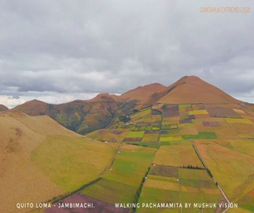
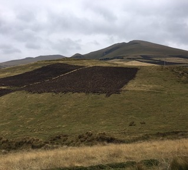
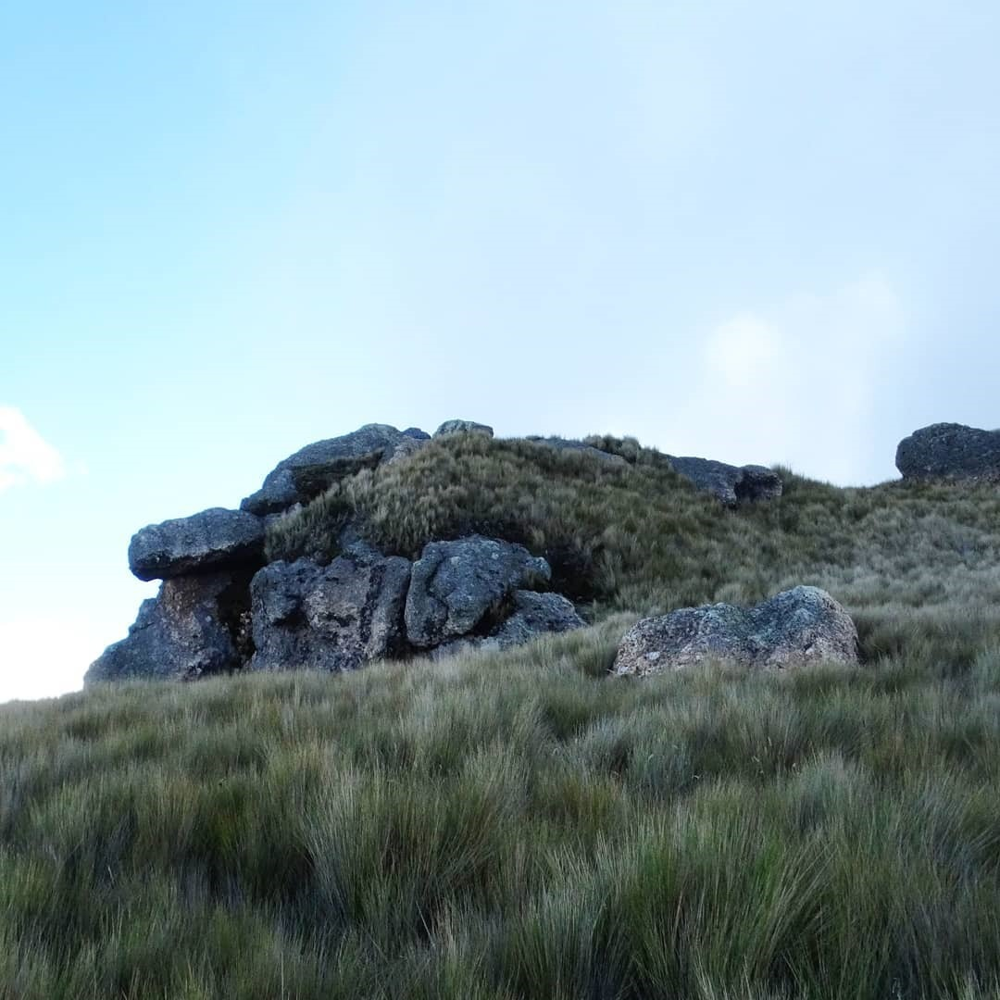
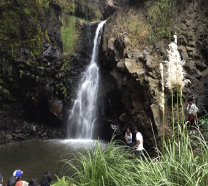
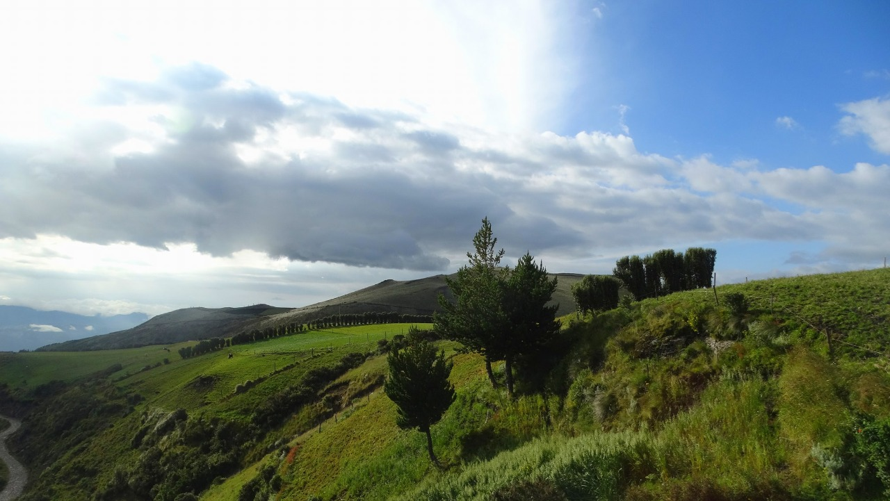
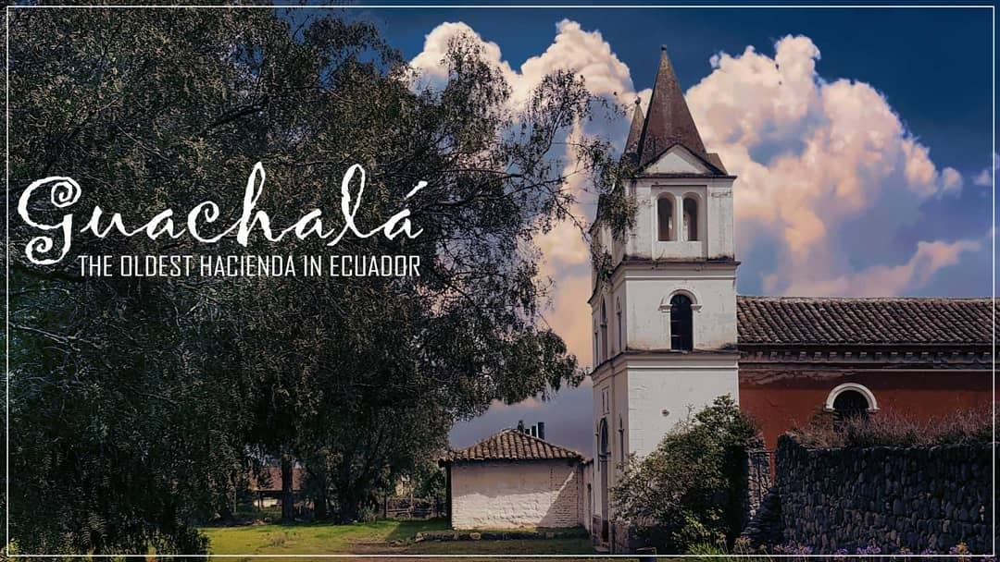
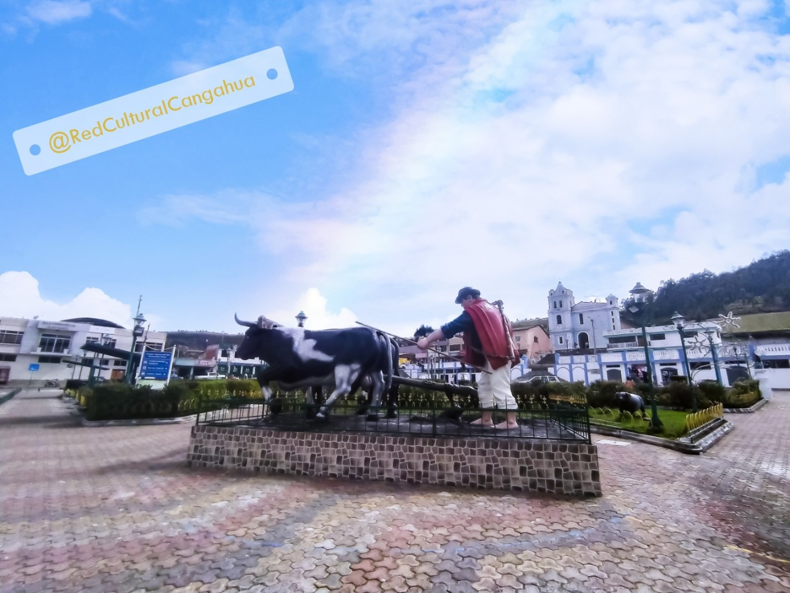
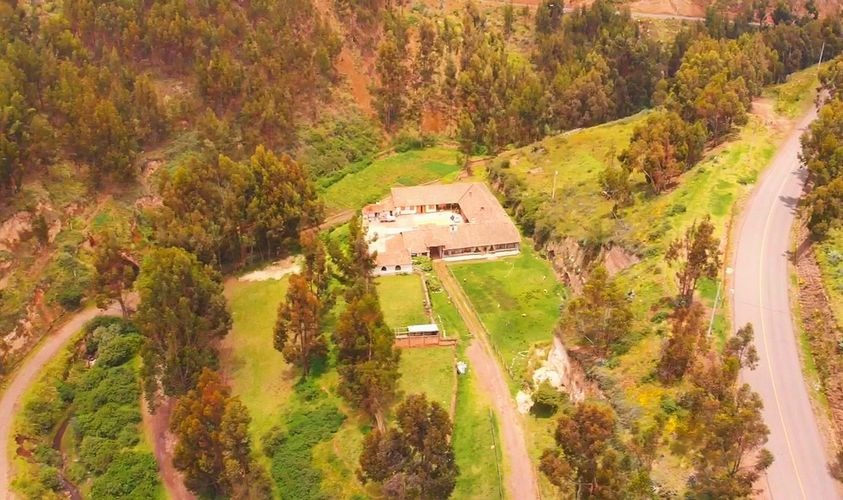
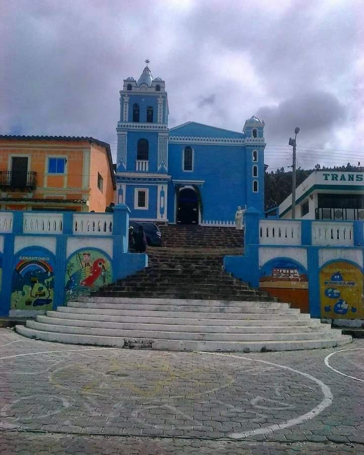
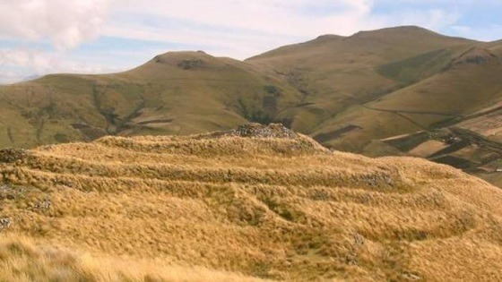

La parroquia rural de Cangahua forma parte del cantón Cayambe de la provincia de pichincha, una de sus
singulares atracciones son los vestigios arqueológicos que se encuentran en la misma en donde los pucarás
ecuatorianos están ubicados en la cima de las colinas y se distribuyen en toda la región andina.





Atractivos Culturales

La parroquia de Cangahua contiene Saberes y prácticas de su cultura plasmada en su patrimonio.




La iglesia de Cangahua, va adecuándose para las visitas de los feligreses ya que es un lugar donde en diferentes
días del año se incrementa la devoción y las visitas para bendecir los granos que se han cosechado.